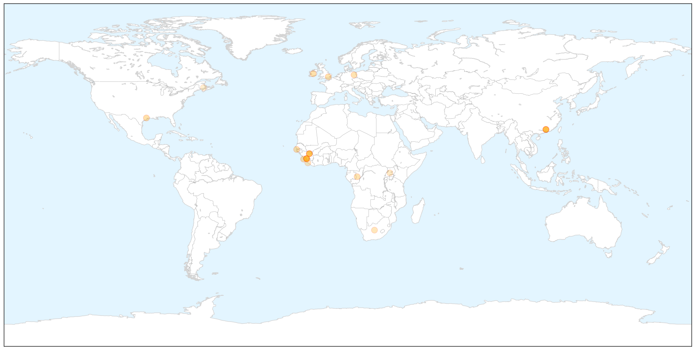
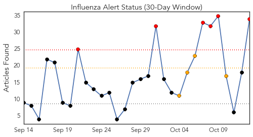
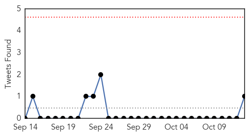
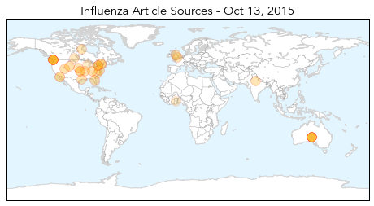
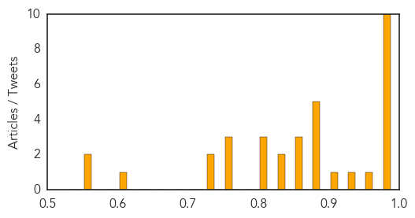

Ebola
30-Day Web Trend
1 alerts, 0 warnings

30-Day Twitter Trend
1 alerts, 0 warnings

Article Locations

X

Article Confidences

Top Articles:
- 1.000
- Ebola beds prevented 40,000 deaths
- 1.000
- Ebola beds prevented 40,000 deaths
- 0.998
- 40 are given experimental Ebola vaccine
- 0.997
- Close contacts of British Ebola nurse monitored
- 0.997
- Health Care
- 0.978
- Johnson & Johnson Starts Ebola Vaccine Clinical Trial in Sierra Leone
- 0.978
- Salone to be declared free of ebola on 8th November « Awoko Newspaper
- 0.977
- NYC sensitises on dangers of Ebola
- 0.960
- Close contacts of British Ebola nurse monitored
- 0.958
- Org awarded for Ebola response
- 0.931
- Luxembourg nurse awarded European Citizen's Prize
- 0.917
- Medical experts discuss global crises in Berlin
- 0.854
- Ebola vaccine tested in W. Africa
- 0.845
- Diaspora Partnerships: Strengthening the Ties that Bind Us
- 0.843
- Chinese Ebola vaccine starts clinical trials in W Africa
- 0.797
- Chains, Witch Doctors Care for Africa's Mentally Ill
- 0.795
- Ebola vaccine tested in W. Africa
- 0.778
- First Study of Janssen's Ebola Prime-Boost Vaccine Regimen to Start in West Africa
- 0.761
- Built for the Dying, This Facility Is Now Bringing New Life
- 0.750
- Chinese vaccine for Ebola tested in West Africa - Sierra Leone
- 0.665
- Africa fails its young scientists by not investing in their innovations
- 0.565
- Africa fails its young scientists by not investing in their innovations -
- 0.516
- Aid is needed, but not all is helpful
Top Tweets:
- 0.949
- Ebola treatment beds prevented 57000 Ebola cases and 40000 deaths in SierraLeone https://t.co/htAV9w9UVU
- 0.917
- BIOASTER FUJIFILM Collaborate on Study of Ebola Virus Disease Rapid ... - Benzinga http://t.co/lqnRgDqo9q ebola EVD
- 0.917
- BIOASTER FUJIFILM Collaborate on Study of Ebola Virus Disease Rapid ... - Benzinga http://t.co/BmcumoX1ok ebola EVD
- 0.890
- Collaborative study for a rapid diagnostic test for Ebola Virus Disease by ... - FierceMedicalDevi... http://t.co/5xDXYRuigF ebola EVD
- 0.812
- Thousands died because Ebola treatment beds reached Sierra Leone too late ... - Washington Post http://t.co/1v3F2uCxzR ebola EVD
- 0.725
- CRMC Dubbed Ebola Assessment Hospital - KGWN http://t.co/AVmIonBmAS ebola EVD
- 0.647
- Ebola outbreak in West Africa 22 months on Key issues for recovery and preparedness http://t.co/fCw5ImTbsy
- 0.556
- Ebola treatment units (ETUs) can help control outbreaks. Read about establishment of ETU in Bombali Sierra Leone. http://t.co/nCVwwr12cY
- 0.501
- Qu’en est-il des orphelins d’Ebola au Liberia ? https://t.co/ShqQach9Ex via
Influenza
30-Day Web Trend
6 alerts, 4 warnings

30-Day Twitter Trend
0 alerts, 0 warnings

Article Locations

Article Confidences
Top Articles:
- 0.999
- NVS Influenza Vaccines Welcomes North Carolina Congresswoman Renee Ellmers on Tour of Holly Springs Manufacturing Facility
- 0.997
- As flu season gets underway, officials urge vaccinations before Halloween
- 0.995
- Got your flu shot? Docs say don't wait
- 0.993
- Health officials urge "a sense of urgency" to get flu vaccination before season hits
- 0.991
- Health department seeing early flu cases
- 0.986
- Study finds flu vaccine helps reduce hospitalizations due to influenza pneumonia
- 0.984
- Doctors: Don't miss out on your flu shot
- 0.977
- Don’t skip flu shot based on last year’s failure, MDs warn
- 0.976
- Professor David Salisbury says all children should be vaccinated against flu
- 0.975
- The 2015 Flu Shot Promises To Be More Effective Than Last Year's
- 0.972
- Don’t skip flu shot based on last year’s failure, MDs warn
- 0.939
- Manifestations of Equine Herpesvirus-1
- 0.919
- Stores begin offering flu vaccines in preparation for flu season
- 0.888
- Shri Nadda meets Delhi Health Minister to review preparedness for Influenza
- 0.885
- Today's stories from newspapers in North Bay Nipissing
- 0.885
- Today's stories from newspapers in North Bay Nipissing
- 0.885
- Researchers enlightens nursing home patients with new high dose of Flu shots that can reduce hospitalization cases
- 0.877
- Vaccinating children may be cost-effective for tackling flu
- 0.865
- This year kids have an option of a nasal spray
- 0.863
- Calls for more flu shots for children following worst spread in 5 years
- 0.863
- Calls for more flu shots for children following worst spread in 5 years
- 0.843
- Calls for more flu shots for children following worst spread in 5 years
- 0.843
- Today's stories from newspapers in Parry Sound
- 0.807
- High Dose Influenza Shots Reduces Risk of Hospitalization in Older People
- 0.800
- Today's stories from newspapers in Ottawa
- 0.800
- Today's stories from newspapers in Ottawa
- 0.756
- Flu shots resume
- 0.751
- October 12, 2015 Archives
- 0.751
- October 12, 2015 Archives
- 0.741
- High dose influenza vaccine decreasing hospitalizations for nursing home residents
- 0.737
- Hospitals, clinics stress importance of flu shots
- 0.612
- CDC: Many Flu Patients Still Getting Antibiotics at Outpatient Clinics
- 0.573
- Researchers test quadruple-dose flu shot
- 0.572
- Larissa leads the way in treating human parainfluenza virus
Top Tweets:
-
No tweets found for Oct 13, 2015